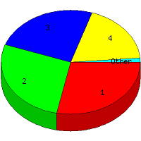

Week of 11/22/2009 to 11/28/2009: Top
5 of
5 File Types (Extensions)
Sorted by Access Count
Individual file types as determined by file extensions. All URLs that
do not contain an extension are counted as directories.

| Rank |
Type |
Accesses |
% |
Bytes |
% |
| 1 |
htm
|
23 |
28.40 |
52,668 |
4.14 |
| 2 |
gif
|
22 |
27.16 |
348,656 |
27.43 |
| 3 |
Directory (folder)
|
20 |
24.69 |
49,875 |
3.92 |
| 4 |
jpg
|
15 |
18.52 |
819,540 |
64.48 |
| 5 |
css
|
1 |
1.23 |
260 |
0.02 |